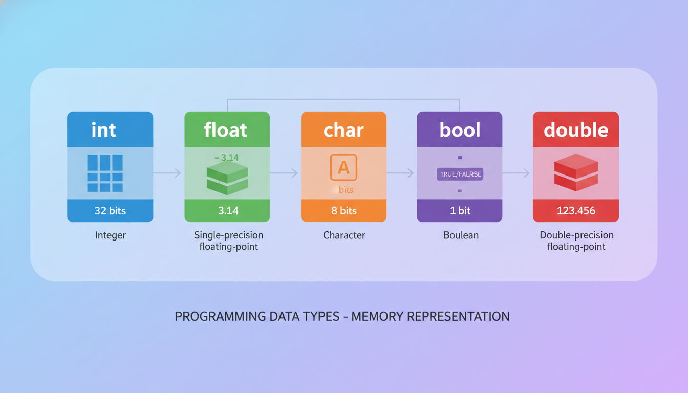

Змінні та константи
Змінна — це іменована область пам'яті, що використовується для зберігання даних, які можуть змінюватися під час виконання програми.
Константа — це змінна, значення якої не може бути змінено після ініціалізації.
Оголошення змінної:
// Синтаксис: тип_даних ім'я_змінної;
int age; // оголошення цілої змінної
double price; // оголошення дійсної змінної
char letter; // оголошення символьної змінної
// Оголошення з ініціалізацією
int count = 10; // ініціалізація значенням
double pi = 3.14159; // ініціалізація дійсним числом
char grade = 'A'; // ініціалізація символом
// Оголошення константи
const int MAX_SIZE = 100; // константа цілого типу
const double PI = 3.14159265; // константа дійсного типу
const char NEWLINE = '\n'; // константа символьного типуПравила іменування змінних:
- Ім'я може містити літери (a-z, A-Z), цифри (0-9) та символ підкреслення (_)
- Ім'я не може починатися з цифри
- Ім'я не може бути ключовим словом C++
- Реєстр літер має значення:
nameтаName— різні змінні - Рекомендується використовувати зрозумілі, описові імена
Змінна в C++ не ініціалізується автоматично! Звернення до неініціалізованої змінної призводить до невизначеної поведінки. Завжди ініціалізуйте змінні при оголошенні.
Типи даних в C++
C++ є строго типізованою мовою — кожна змінна має мати визначений тип даних. Тип визначає:
- Розмір — скільки байтів у пам'яті займає змінна
- Діапазон значень — які значення може приймати змінна
- Операції — які дії можна виконувати над даними цього типу

Класифікація типів даних C++:
- Базові (фундаментальні) типи — int, float, double, char, bool, void
- Складені типи — масиви, структури, об'єднання, класи
- Вказівні типи — покажчики, посилання
Цілі типи даних
Цілі типи використовуються для зберігання цілих чисел (без дробової частини).
| Тип | Розмір (байт) | Діапазон значень |
|---|---|---|
short | 2 | -32 768 ... 32 767 |
unsigned short | 2 | 0 ... 65 535 |
int | 4 | -2 147 483 648 ... 2 147 483 647 |
unsigned int | 4 | 0 ... 4 294 967 295 |
long | 4 або 8 | залежить від платформи |
unsigned long | 4 або 8 | залежить від платформи |
long long | 8 | -9×10¹⁸ ... 9×10¹⁸ |
unsigned long long | 8 | 0 ... 1.8×10¹⁹ |
Модифікатори для цілих типів:
signed— зі знаком (може бути від'ємним), використовується за замовчуваннямunsigned— без знаку (тільки додатні значення), подвоює діапазон додатних чиселshort— короткий формат (зазвичай 2 байти)long— довгий формат (зазвичай 4-8 байт)
Дійсні типи даних
Дійсні типи використовуються для зберігання чисел з дробовою частиною.
| Тип | Розмір (байт) | Точність (цифр) | Діапазон |
|---|---|---|---|
float | 4 | 6-7 | ±3.4×10⁻³⁸ ... ±3.4×10³⁸ |
double | 8 | 15-16 | ±1.7×10⁻³⁰⁸ ... ±1.7×10³⁰⁸ |
long double | 8-16 | 18-21 | розширена точність |
float temperature = 36.6f; // суфікс f для float
double pi = 3.14159265358979; // double за замовчуванням
long double precise = 1.0L; // суфікс L для long double
// Наукова нотація
double bigNumber = 1.5e10; // 1.5 × 10¹⁰ = 15 000 000 000
double smallNumber = 2.5e-4; // 2.5 × 10⁻⁴ = 0.00025Символьний тип char
Тип char використовується для зберігання одного символу (1 байт = 8 біт). Значення зберігається як числовий код символу в таблиці ASCII.
| Варіант | Розмір | Діапазон |
|---|---|---|
char | 1 байт | -128 ... 127 або 0 ... 255 |
signed char | 1 байт | -128 ... 127 |
unsigned char | 1 байт | 0 ... 255 |
wchar_t | 2 або 4 байти | Розширені символи (Unicode) |
char letter = 'A'; // символ 'A' (код 65)
char digit = '7'; // символ '7' (код 55)
char newline = '\n'; // спеціальний символ — новий рядок
// Спеціальні символи (escape sequences)
\n // новий рядок
\t // табуляція
\\ // зворотній слеш
\' // одинарна лапка
\" // подвійна лапка
\0 // нульовий символ (кінець рядка)Логічний тип bool
Тип bool використовується для зберігання логічних значень: true (істина) або false (хибність). Займає 1 байт.
bool isReady = true;
bool hasError = false;
bool isGreater = (10 > 5); // true
// bool автоматично перетворюється на int:
// true → 1, false → 0
int flag = true; // flag = 1
bool val = 100; // val = true (будь-яке ненульове число)Перетворення типів
У C++ є два види перетворення типів:
1. Неявне перетворення (автоматичне)
Відбувається автоматично при присвоєнні значення одного типу змінній іншого типу:
int i = 10;
double d = i; // int → double: d = 10.0
char c = 'A'; // код 65
int x = c; // char → int: x = 65
double pi = 3.14;
int truncated = pi; // double → int: truncated = 3 (дробова частина відкидається)2. Явне перетворення (type casting)
Програміст явно вказує бажаний тип:
double a = 5.7;
int b = (int)a; // C-style: b = 5
int c = int(a); // функціональний запис: c = 5
int d = static_cast<int>(a); // C++ style: d = 5
int x = 10, y = 3;
double result = (double)x / y; // result = 3.333...
// без cast: x / y = 3 (цілочисельне ділення)При перетворенні від "більшого" типу до "меншого" може відбутися втрата даних. Наприклад, при перетворенні double → int дробова частина відкидається, а при int → char зберігаються тільки молодші 8 біт.
Приклад: сума двох чисел
Розглянемо класичну задачу знаходження суми двох чисел з введенням та виведенням даних:
#include <iostream>
using namespace std;
int main() {
// Оголошення змінних
int a, b;
int sum;
// Введення даних
cout << "Введіть перше число: ";
cin >> a;
cout << "Введіть друге число: ";
cin >> b;
// Обчислення суми
sum = a + b;
// Виведення результату
cout << "Сума " << a << " + " << b << " = " << sum << endl;
return 0;
}Результат виконання:
Введіть перше число: 15
Введіть друге число: 25
Сума 15 + 25 = 40Варіант з дійсними числами:
#include <iostream>
using namespace std;
int main() {
double x, y;
cout << "Введіть два числа: ";
cin >> x >> y; // можна зчитувати кілька значень
cout << "Сума: " << x + y << endl;
cout << "Різниця: " << x - y << endl;
cout << "Добуток: " << x * y << endl;
if (y != 0) {
cout << "Частка: " << x / y << endl;
}
return 0;
}📝 Тести для самоперевірки
💻 Практичні завдання
Напишіть програму, яка циклічно змінює значення трьох змінних: A→B→C→A. Використайте лише базові операції присвоєння.
Напишіть програму, яка виводить розмір (в байтах) кожного базового типу даних C++: char, short, int, long, long long, float, double, long double, bool. Використайте оператор sizeof().
Напишіть програму, яка виводить ASCII таблицю для символів з кодами 32-126. Виведіть символ та його числовий код.
Напишіть програму, яка конвертує суми між валютами (USD, EUR, UAH) за фіксованим курсом. Використайте константи для курсів обміну.
Напишіть програму, яка демонструє переповнення для типів short, int та unsigned int. Покажіть, що відбувається при перевищенні максимального значення.
Напишіть програму, яка виводить різні фізичні константи (швидкість світла, гравітаційну сталу, масу електрона) у науковій нотації з різною точністю.
Напишіть програму, яка зчитує ціле число та перевіряє, чи воно знаходиться в діапазоні [0, 100]. Якщо ні — виведіть повідомлення про помилку.
Напишіть програму, яка обчислює значення виразу: (a + b) / 2 для різних комбінацій типів a та b (int/int, int/double, double/double). Проаналізуйте результати.
Напишіть програму, яка демонструє базові бітові операції: AND (&), OR (|), XOR (^), NOT (~), зсуви (<<, >>) на прикладі цілих чисел.
Для кожної з наступних задач виберіть найбільш підходящий тип даних та обгрунтуйте вибір: вік людини, ціна товару в гривнях, кількість студентів у групі, площа квартири, швидкість автомобіля, код символу, прапор наявності помилки.